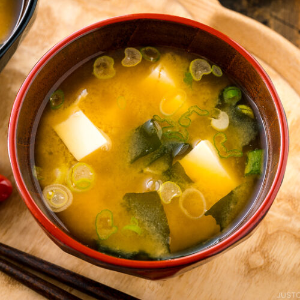

Miso Soup

Description
Most Japanese meals are served with a small bowl of steamed rice and a traditional Japanese soup called Miso Soup (味噌汁). At its most basic, miso soup is simply made of 3 components:
Dashi (Japanese soup stock), Miso (soybean paste), Soup ingredients, such as tofu and wakame seaweed
Ingredients
Prep time: 5 mins | Cook time: 15 mins | Total time: 20 mins
Dashi
- 4 cups water
- 1 piece kombu (dried kelp)
- 1 cup katsuobushi (dried bonito flakes)
Miso Soup
- 7 oz soft/silken tofu (kinugoshi dofu)
- 4-5 Tbsp miso
- 1 Tbsp dried wakame seaweed
- 1 green onion/scallion
Instructions
- Gather all the ingredients.
- Cut the green onion into thin rounds.
To Make the Dashi (Can Be Made in Advance)
- Add the water and kombu to a medium saucepan. If you have time, soak the kombu in water for 30 minutes. NEVER wash kombu and do not remove the white substance—that’s umami! These days, it's pretty clean so just make sure there are no dirt particles.
- SLOWLY bring it to a boil on medium-low heat so you can extract as much umami from the kombu as possible (about 10 minutes). Right before the stock boils, remove the kombu and set it aside for another use. (If you leave the kombu, it gets slimy and yields a bitter taste.) Now, what you have is Kombu Dashi. If you’re vegetarian/vegan, use this kombu dashi for your miso soup.
- If you're not vegetarian/vegan, add the katsuobushi to the kombu dashi and bring it back to a boil again. Once the dashi is boiling, reduce the heat, simmer for just 30 seconds.
- Turn off the heat and let the katsuobushi sink to the bottom, about 10 minutes. Then, strain through a fine-mesh sieve.
- Now you have roughly 4 cups of Awase Dashi. You can store the dashi in the refrigerator for up to 3-5 days and in the freezer for up to 2 weeks. Reserve the spent katsuobushi and repurpose it; see the suggested recipes that follow at the end of the instructions.
To Make the Miso Soup
- Add the dashi to the saucepan. If you are using premade dashi, bring it to simmer over medium heat and turn off the heat.
- Add the miso (typically, use 1 Tbsp miso for every 1 cup (240 ml) of dashi). Put the miso in a ladle, slowly add the dashi into the ladle, and stir with chopsticks to dissolve the miso completely. Here, I'm using a miso muddler. If you accidentally add too much miso, dilute the miso soup with dashi (or water).
- Here, I'm using a fine-mesh miso strainer, which helps you dissolve the miso faster. After dissolving the miso in the strainer, you may see rice koji (especially when it's koji miso). It's up to you if you want to include it in the miso soup or discard it (personal preference).
- Cut the tofu into ½-inch (1.3 cm) cubes and add to the miso soup. Tip: Add the tofu after the miso is completely dissolved; otherwise, you might break the tofu when stirring in the miso. Note: It is very common to cut tofu on your palm in Japan. However, it's not required and I recommend using a cutting board if you have never done this.
- Add the dried wakame seaweed. Reheat the miso soup until it is just hot. NEVER BOIL miso soup because it loses nutrients, flavor, and aroma. Add the chopped green onions right before serving to keep their fresh fragrance and color. Tip: If you worry about salt intake, I recommend rehydrating the dried wakame in a separate bowl of water to get rid of the saltiness, instead of rehydrating it in the soup itself.
To Serve
- Serve immediately.
You are Finished!